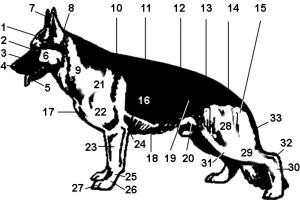
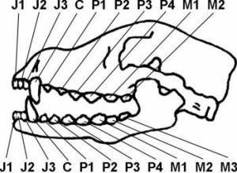
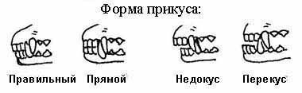
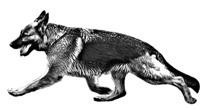

Зарегистрирован в FCI: 12.07.2012 г.
Владелец: Азарко Евгений Михайлович
Республика Беларусь, г.Слоним
Телефон: +37529-7075805(МТС); +37529-3534884(Вел)
Email: Azarko83@mail.ru
Краткий исторический обзор. По должностным инструкциям Союза владельцев немецкой овчарки (бюро в Аугсбурге в Союзе немецкого собаководства - VDH), являющегося в качестве союза-основателя породы ответственным за стандарт, он впервые был определен на первом собрании членов во Франкфурте-на-Майне 20 сентября 1899 года, по предложениям А.Мейера и фон Штефаница. Дополнения были внесены 4-м общим собранием членов 28 июля 1901 года, 23-м собранием в Кельне 17 сентября 1909 года, заседанием Президиума и консультативного Совета в Висбадене 5 сентября 1930 года и заседанием племенного комитета и Президиума 25 марта 1961 года. В рамках Всемирного Союза владельцев немецкой овчарки – WUSV, стандарт был переработан, каталогизирован и принят на заседании WUSV 30 августа 1976 года с решением о полномочии Президиума и Консультативного совета от 23/24 марта 1991 года. Немецкая овчарка, планомерное разведение которой было начато в 1899 году после основания Союза, разводилась на основе средне-немецких и южно-немецких разновидностей существовавших в то время сторожевых собак с конечной целью создания пользовательной собаки с высокими рабочими качествами. Для достижения этой цели, был определен стандарт немецкой овчарки, который касался как физических качеств, так и свойств темперамента и характера.
Немецкая овчарка - это собака среднего роста, слегка растянутая, сильная, с хорошей мускулатурой. Костяк сухой, общее строение крепкое.
Важные соотношения величин: высота в холке составляет у кобелей 60-65 см, у сук 55-60 см. Длина корпуса превосходит высоту в холке примерно на 10-17%.
Пропорции между ростом и весомнемецкой овчарки также имеют немаловажное значение, так как являются показателем конституциональных особенностей животного и говорят о его кондиции.
Оптимальным является следующее соотношение:
кобели: высота в холке 60-65 см, вес – 33-40 кг;
суки: высота в холке 55-60 см, вес – 22-32 кг;
Отклонение от этих показателей происходит, как правило, за счет уменьшения или увеличения костной или жировой ткани, т.е. в первом случае имеют место недостатки костяка, во втором - недостатки кондиции. Значительные отклонения от нормы становятся заметными визуально, в этих случаях говорят, что собака тяжелая или легкая. И то и другое является существенным недостатком для немецкой овчарки и ограничивает ее работоспособность.
Немецкая овчарка должна быть, согласно представлению о темпераменте, уравновешенной, с крепкой нервной системой, уверенной в себе, абсолютно искренней, полностью добронравной (за исключением возбужденного состояния), при этом внимательной и управляемой. Она должна обладать мужеством, боевым инстинктом и твердостью, чтобы быть способной служить собакой-компаньоном, охранной, защитной и караульной собакой.
|
1 - черепная часть головы 2 - переход от лба к морде 3 - морда 4 - мочка носа 5 - нижняя челюсть 6 - скулы 7 - уши 8 - затылочный бугор 9 - шея 10 - холка 11 - спина 12 - поясница 13 - маклаки 14 - круп 15 - седалищный бугор 16 - грудная клетка 17 - передняя часть груди |
18 - нижняя часть груди 19 - подвздох 20 - пах 21 - лопатка 22 - плечо 23 - предплечье 24 - локоть 25 - запястье 26 - пясть 27 - лапа 28 - бедро 29 - голень 30 - плюсна 31 - колено 32 - скакательный сустав 33 - хвост |
Голова клинообразная, соответствующей величины (длина примерно 40% от высоты в холке), не должна быть грубой или излишне легкой. Общее впечатление - сухая, между ушами умеренно широкая. Лоб при взгляде спереди и сбоку только чуть выпуклый, без лобной бороздки или с очень слабой ее выраженностью. Соотношение черепа к морде составляет 50% к 50%. Ширина черепа примерно соответствует его длине. Череп (при взгляде сверху), равномерно сужающийся от ушей к мочке носа, с заметным, но не резко выраженным переходом от лба к морде, переходит в клинообразную морду. Верхняя и нижняя челюсти сильно развиты. Спинка носа прямая, прогиб или горбинка нежелательны. Губы сухие, плотно прилегающие, темного цвета. Мочка носа. Должна быть черной.
Взрослая собака имеет 42 постоянных зуба, которые появляются взамен молочных в 6-7 месячном возрасте. В верхней челюсти расположено 20 зубов, в нижней – 22. Они имеют следующее наименование и значение:

|
J - резцы (J1- зацепы, J2 - средние резцы, J3 - окрайки) С - клыки, Р - премоляры (Р1 - первые премоляры, Р2 - вторые премоляры, Р3 - третьи премоляры, Р4 - четвертые премоляры) М - моляры (М1 - первые моляры, М2 - вторые моляры, М3 - третьи моляры) |
Прикус должен быть мощным, зубы здоровыми, в полном комплекте. У немецкой овчарки ножницеобразный прикус. Это означает, что резцы должны заходить друг за друга наподобие ножниц, при этом резцы верхней челюсти ножницеобразно стоят перед резцами нижней. Прямой прикус, пере- или недокус не допускаются, как и большие зазоры между зубами (прерывистый постав) Челюсти должны быть мощно развиты, чтобы зубы глубоко сидели в ряду.

Среднего размера, миндалевидные, чуть косо поставленные, не выпуклые. Цвет глаз должен быть как можно темнее. Светлые, пронизывающие глаза нежелательны, так как они нарушают выражение собаки.
У немецкой овчарки длина шеи должна быть равна длине головы. Шея овальная в сечении, сильная, мускулистая, подвижная и сухая, в свободном состоянии поставлена под углом около 45° по отношению к линии горизонта. Для овчарки характерен густой и плотный шерстный покров на шее, защищающий ее от холода и схваток с противником. К недостаткам относится высокий или низкий постав шеи. В первом случае это взаимосвязано с уменьшением площади плечевого пояса, прямыми пястями, короткими семенящими движениями, во втором - с укорочением шеи и, как правило, нарушением баланса при движении рысью. Признаки сырости шеи – наличие отвисающей складки на нижней ее стороне – крайне нежелательны, так как свидетельствуют о недостатках конституции и уменьшают подвижность и силу шейной мускулатуры.
Линия верха проходит практически непрерывно от основания шеи, через хорошо выраженную холку и слегка спадающую по отношению к горизонтали спину к чуть наклонному крупу. Спина крепкая, сильная, с хорошей мускулатурой. Круп должен быть длинным, слегка спадающим (примерно 23 градуса к горизонтали) и ровно переходить в основание хвоста. Грудь должна быть умеренно широкой, грудная кость как можно более длинная и выраженная. Глубина груди должна составлять примерно 45-48% высоты в холке. Ребра должны быть умеренно сводистые, бочкообразная грудь также нежелательна, как и плоские ребра.
Хвост достает, по крайней мере, до скакательного сустава, однако не длиннее середины плюсны. На нижней стороне хвоста шерсть чуть длиннее. Хвост держится мягко свисающим изгибом, при этом в возбуждении и в движении держится более поднятым, однако не выше горизонтали. Оперативная корректура запрещена.
Передние конечности: при взгляде с любой стороны прямые, при взгляде спереди абсолютно параллельные. Лопатка и плечо равной длины и благодаря мощной мускулатуре плотно прилегают к корпусу. Углы плече-лопаточных сочленений составляют в идеальном случае 90 градусов, допускается до 110 градусов.
Локти ни в стойке, ни в движении не должны быть ни вывернуты, ни сближены. Предплечья при взгляде с любой стороны прямые и абсолютно параллельные друг к другу, сухие и с крепкой мускулатурой. Пясть составляет примерно 1/3 длины предплечья и образует с ним угол примерно в 20-22 градуса. Как слишком наклонно (более 22 градусов), так и отвесно стоящая пясть (менее 20 градусов) оказывает отрицательное влияние на пользовательные свойства собаки, в особенности на выносливость.
Лапы округлые, хорошо собранные и сводистые, подушечки жесткие, но не хрупкие. Когти крепкие, темного цвета.
Задние конечности: постав задних конечностей слегка отставленный, при этом при взгляде сзади они параллельны друг другу. Бедро и голень приблизительно одинаковой длины и образуют угол примерно в 120 градусов. Бедра мощные, с хорошей мускулатурой.
Скакательные суставы отлично выраженные и крепкие, плюсна стоит вертикально под скакательным суставом.
Лапы собранные, слегка сводистые, подушечки жесткие, темного цвета, когти крепкие и также темного цвета.
Немецкая овчарка - рысак. Конечности должны быть согласованы друг с другом по длине и углам таким образом, чтобы собака могла без существенных изменений линии верха передвигать задние конечности на длину корпуса и точно так же выносить передние конечности. Любая склонность к уменьшению углов задних конечностей снижает крепость и выносливость и, следовательно, производительность. При правильных пропорциях корпуса и углах возникают размашистые, идущие параллельно поверхности земли, движения, производящие впечатления легкого движения вперед. При наклоненной вперед голове и слегка приподнятом хвосте во время равномерной и спокойной рыси от кончиков ушей через загривок и спину до кончика хвоста создается мягко раскачивающаяся и непрерывная линия спины.

Правильное положение корпуса и работа конечностей на рыси
Качество шерсти: нормальной шерстью для немецкой овчарки является шерсть с подшерстком. Покровный волос должен быть как можно плотнее, прямым жестким и плотно прилегающим. На голове, включая внутреннюю часть ушей, на передней стороне конечностей, на лапах и пальцах - шерсть короткая, на шее - чуть длиннее и гуще. На задней стороне конечностей шерсть удлиняется до пясти или до скакательного сустава, на задней стороне бедер образует умеренные очесы.
Черный, с красно-коричневыми, коричневыми, желтыми до светло-серых отметин. Черный и серый однотонный, у серых с более темным налетом. С черным плащом и маской. Незаметные маленькие белые отметины на груди, а также очень светлые внутренние стороны допустимы, но нежелательны. Мочка носа при всех окрасах должна быть черной. Отсутствие маски, светлые до пронзительности глаза, а также светлые до белого отметины на груди и внутренних сторонах конечностей, светлые когти и красный кончик хвоста следует оценивать как слабость пигмента. Подшерстку свойственен легкий серый тон. Белый окрас недопустим.
У кобелей должно быть два явно выраженных, нормально развитых семенника, которые полностью находятся в мошонке.
Любые отклонения от вышеназванных пунктов должны рассматриваться как недостатки, оценка которых должна находиться в точном соответствии со степенью отклонения.
Отклонения от вышеописанных признаков породы, которые нарушают ее пользовательные качества.
Недостатки ушей: слишком низко по сторонам поставленные уши, уши со складкой, постав ушей козырьком, некрепкие уши.
Существенные недостатки пигмента.
Сильно нарушенная общая крепость.
Недостатки зубов: все отклонения от ножницеобразного прикуса или зубной формулы, если речь не идет о пороках (см. ниже).
вверх